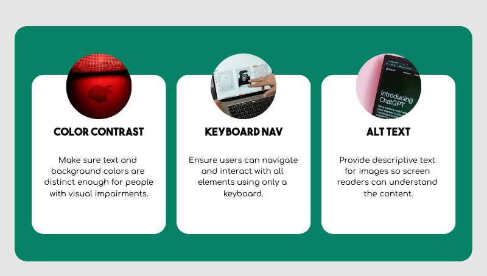

Designing for accessibility ensures digital products are usable by all individuals, including those with visual, auditory, motor, or cognitive impairments. It's about inclusion, not just compliance. Like a public space designed for everyone, digital spaces should also be accessible to all.
Keyboard navigation or voice commands for motor-impaired users
Strong color contrast for color-blind users
Simple interfaces for elderly or low-tech users
Inclusive Design Principles
Inclusive design goes beyond accessibility standards to benefit all users. For instance, large buttons help both users with motor impairments and people using a phone one-handed. Captions assist the deaf and those in noisy environments alike.
WCAG Guidelines Overview
Keyboard navigation: Interface must function without a mouse.
Color contrast: Text should be readable against its background.
Alt text: Descriptive text for images helps screen reader users.
Captions: Audio and video content should include captions or transcripts.
Clear language: Avoid jargon and keep instructions simple.

Real-World Examples
Facebook uses AI to generate alt text for images.
Microsoft and Apple offer built-in screen readers and voice navigation.
Domino’s Pizza faced a lawsuit over an inaccessible website.
Public services like BBC and gov.uk meet strict accessibility standards.
Conclusion
Accessibility is a core element of good UI/UX design. By following guidelines and adopting an inclusive mindset, designers can create digital products that are usable by everyone. This not only benefits users with disabilities but enhances the experience for all.